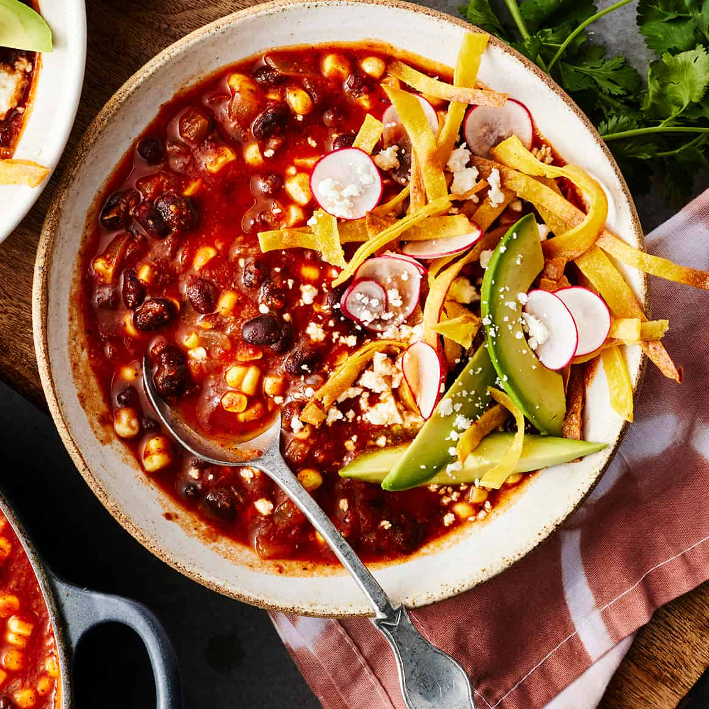

Vegetarian Tortilla Soup

Description
People have offered me their firstborn children for this recipe; it is simple, easy to make, and delicious.
It's also vegan if you don't add the cheese at the end. If you prefer a more spicy soup, add a dash or two of hot sauce before serving.
Ingredients
- 2 tablespoons vegetable oil
- (1 pound) package frozen pepper and onion stir fry mix
- 2 cloves garlic, minced
- 3 tablespoons ground cumin
- 1 (28 ounce) can crushed tomatoes
- 3 (4 ounce) cans chopped green chile peppers, drained
- (14 ounce) cans vegetable broth
- salt and pepper to taste
- 1 (11 ounce) can whole kernel corn
- 2 ounces tortilla chips
- cup shredded Cheddar cheese
- 1 avocado - peeled, pitted and diced
Steps:
- Heat the oil in a large pot over medium heat. Stir in the pepper and onion stir fry mix, garlic, and cumin, and
cook 5 minutes, until vegetables are tender. Mix in the tomatoes and chile peppers.
Pour in the broth, and season with salt and pepper. Bring to a boil, reduce heat to low, and simmer 30 minutes.
- Mix corn into the soup, and continue cooking 5 minutes. Serve in bowls over equal amounts of tortilla chips. Top with cheese and avocado.